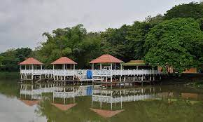
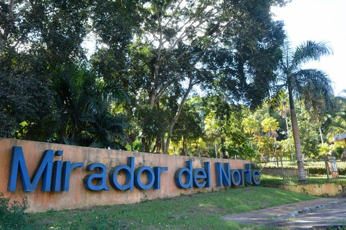

El Parque Nacional Mirador Norte. Es el más reciente pulmón verde para el equilibrio ecológico de la ciudad. Situado en la parte norte de la Capital, en un área de más de 4 millones de m2, cercano al río Isabela. Este inmenso parque, de belleza indescriptible, aloja en su terreno una exuberante flora silvestre, y cuenta, además, con un lago, que permite disfrutar de un divertido paseo en bote. Posee alrededor de 10 kilómetros cuadrados y es dueña de la mayor biodiversidad en Santo Domingo. Cuenta con un lago artificial y sus islas, senderos, miradores, monumentos, áreas de deportes y juegos infantiles y espacios para picnic. Dentro de las atracciones para el disfrute de la familia está un espacio de observación de aves en su ambiente natural, bicicletas disponibles, botes para recorrer el lago, gacebos para las fiestas y cumpleaños, cafeterías y el restaurante La Cotorra. Está ubicado entre las avenidas Hermanas Mirabal y Jacobo Majluta en Santo Domingo. Este refugio natural es un destino elegido por muchas familias para disfrutar de la brisa fresca y el verde de los árboles los fines de semana o días feriados. Este parque tiene la característica de que posee lagos naturales y que colinda con el río Isabela en la parte Sur, donde no existen asentamientos humanos que le afecten, lo que le hace más atractivo y de mayor garantía para su conservación. Para su protección y seguridad cuenta con 80 personas y próximamente serán 100.
La zona que hoy constituye lo que es el Parque Nacional Mirador del Norte, remonta sus orígenes a la década de los 50’s. En esta década era propiedad de Don José David Rodríguez quien desarrolló actividades de agricultura y ganadería en toda su superficie. Años más tarde, adquirió el terreno contiguo perteneciente al coronel Manuel Emilio Castillo. Dicho terreno comprendía unas dos mil tareas y contaba, además, con el exuberante fondo de los ríos Isabela y Yaguasa, al igual que pequeños lagos y lagunas por toda su extensión. Estas tierras, remanso refugio y retiro de Don José, conocidas como “Rancho Tamarindo”, primero, y posteriormente “Hacienda Santa Cruz”, fueron declaradas de utilidad pública en varias ocasiones.
Siendo durante el periodo histórico conocido como el régimen de Rafael Leonidas Trujillo, la primera vez que el gobierno mostró interés por esta propiedad, debido a la existencia de una mina de caliche que se encontraba en su interior. En ese momento, dada la situación que acaecía en el país y tras la muerte del tirano, los terrenos no pasaron a manos del Estado. Posteriormente, durante las primeras gestiones de gobierno del Presidente Joaquín Balaguer, específicamente en 1966, el Gobierno volvió a interesarse por esta gran extensión de terreno de aproximadamente unos cinco (5) kilómetros de longitud y un (1) kilómetro de ancho, declarándolo nuevamente de utilidad pública, a los fines de levantar el Cementerio Cristo Redentor. Este hecho no logró materializarse, debido a que le fueron presentados los terrenos que hoy día ocupa este Campo Santo en la Sección de los Peralejos.